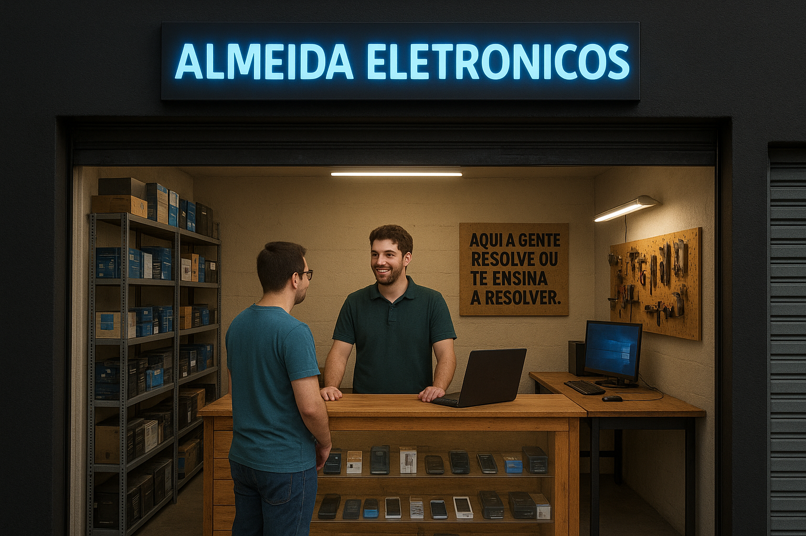

A história da EletronShop começou em 2012, quando Lucas Almeida, um jovem apaixonado por tecnologia, decidiu transformar a garagem de sua casa em uma loja de eletrônicos, com o nome de Almeida Eletrônicos. Com um estoque inicial de produtos básicos, como celulares, tablets e acessórios, Lucas começou a vender para amigos, familiares e vizinhos. Nos primeiros meses, a loja de garagem foi um sucesso, graças à dedicação e ao conhecimento de Lucas sobre os produtos que vendia. Ele passava horas estudando as últimas tendências e tecnologias, para garantir que seus clientes recebessem as melhores opções.
Com o tempo, a loja de garagem se tornou pequena demais para atender à demanda crescente. Lucas então decidiu alugar um ponto comercial no centro da cidade e mudar o nome da loja para EletronShop. A nova loja foi inaugurada em 2013, com um estoque mais amplo e uma equipe de funcionários treinados para atender aos clientes. A EletronShop rapidamente se tornou uma referência no mercado de eletrônicos da cidade, graças à sua política de preços competitivos e ao atendimento ao cliente de alta qualidade. Lucas também investiu em marketing e publicidade, criando uma presença online forte e utilizando as redes sociais para promover a loja.
Ao longo dos anos, a EletronShop continuou a crescer e se expandir, adicionando novos produtos e serviços ao seu portfólio. A loja se tornou um destino popular para os amantes de tecnologia, que vinham para comprar os últimos gadgets e receber conselhos de especialistas. Hoje, a EletronShop é uma das principais lojas de eletrônicos da cidade, com uma equipe de funcionários experientes e um estoque que inclui os últimos produtos de tecnologia. Lucas continua a liderar a loja com paixão e dedicação, sempre buscando novas maneiras de melhorar e inovar.
